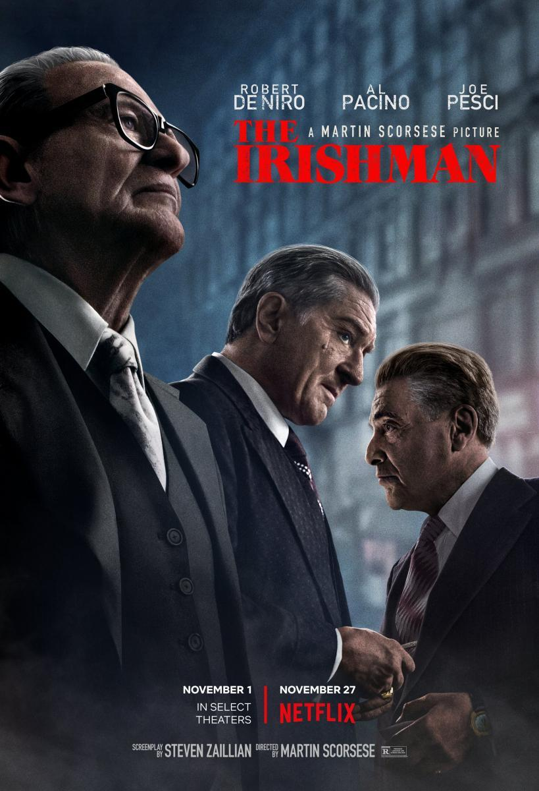
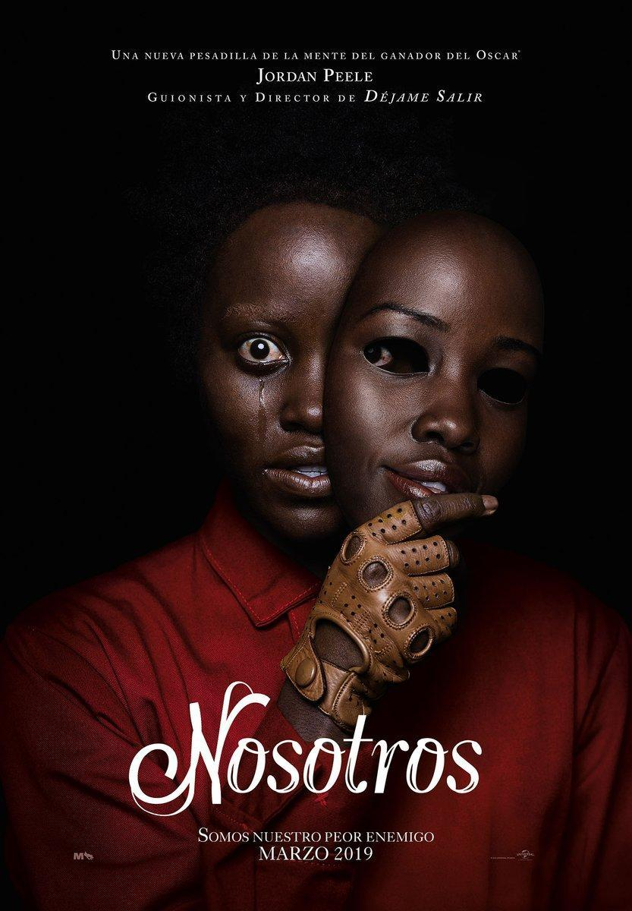

| TITULO | SINOPSIS | PORTADA Y RESUMEN |
|---|---|---|
| TOY STORY 4 |
Woody siempre ha tenido claro cuál es su labor en el mundo y cuál es su prioridad: cuidar a su dueño, ya sea Andy o Bonnie. Sin embargo, Woody descubrirá lo grande que puede ser el mundo para un juguete cuando Forky se convierta en su nuevo compañero de habitación. Los juguetes se embarcarán en una aventura de la que no se olvidarán jamás. |

|
| JOKER |
Arthur Fleck adora hacer reír a la gente, pero su carrera como comediante es un fracaso. El repudio social, la marginación y una serie de trágicos acontecimientos lo conducen por el sendero de la locura y, finalmente, cae en el mundo del crimen. |

|
| ERASE UNA VEZ EN HOLLYWOOD |
A finales de los 60, Hollywood empieza a cambiar y el actor Rick Dalton trata de adaptarse a los nuevos tiempos. Junto a su doble, ambos experimentan problemas para modificar sus hábitos, debido a lo enraizados que están. Al mismo tiempo, nace una relación entre Rick y la actriz Sharon Tate, que fue víctima de la familia Manson en la matanza de 1969. |
|
| EL IRLANDES |
Frank Sheeran, veterano de la Segunda Guerra Mundial, estafador y asesino a sueldo recuerda su participación en el asesinato de Jimmy Hoffa. Uno de los grandes misterios sin resolver del país: la desaparición del legendario sindicalista Jimmy Hoffa. Un gran viaje por los turbios entresijos del crimen organizado: sus mecanismos internos, rivalidades y su conexión con la política. |

|
| GLASS |
David Dunn busca mantenerse un paso por delante de la ley mientras imparte justicia en las calles de Filadelfia. Sus talentos especiales pronto lo colocan en un curso de colisión con la Bestia, un loco psicótico que tiene una fuerza sobrehumana y 23 personalidades distintas. Su enfrentamiento épico los lleva a un encuentro con el misterioso Elijah Price, el cerebro criminal que guarda secretos críticos para ambos hombres. |

|
| LOS MISERABLES |
Después de 19 años como prisionero, Jean Valjean es liberado por Javert, el oficial a cargo de la fuerza de trabajo de la prisión. Valjean viola su libertad y más tarde usa el dinero robado para reinventarse como alcalde y dueño de una fábrica. Por su parte, Javert promete llevar a Valjean de vuelta a la cárcel. Ocho años después, Valjean se convierte en el guardián de un niño llamado Cosette tras la muerte de su madre, pero la persecución de Javert significa que la paz tardará en llegar. |
|
| NOSOTROS |
Adelaide y su esposo viajan a la casa en la que ella creció junto a la playa. Tiene un presentimiento siniestro que precede a un encuentro espeluznante: cuatro enmascarados se presentan ante su casa. Lo aterrador viene cuando muestran sus rostros. |

|
| HISOTRIA DE UN MATRIMONIO |
Un director de teatro y su mujer, actriz, luchan por superar un divorcio que les lleva al extremo tanto en lo personal como en lo creativo. |

|
| PARASITOS |
Tanto Gi Taek como su familia están sin trabajo. Cuando su hijo mayor, Gi Woo, empieza a impartir clases particulares en la adinerada casa de los Park, las dos familias, que tienen mucho en común pese a pertenecer a dos mundos totalmente distintos, entablan una relación de resultados imprevisibles. |

|
| HISTORIAS DE MIEDO PARA CONTAR EN LA OBSCURIDAD |
La familia Bellows y su sombra ha aumentado en Mill Valley, ya que las historias de terror de la joven Sarah empiezan a cobrar realidad. Un grupo de adolescentes debe resolver el misterio que rodea a una serie de repentinas y macabras muertes que suceden en su pueblo. |

|